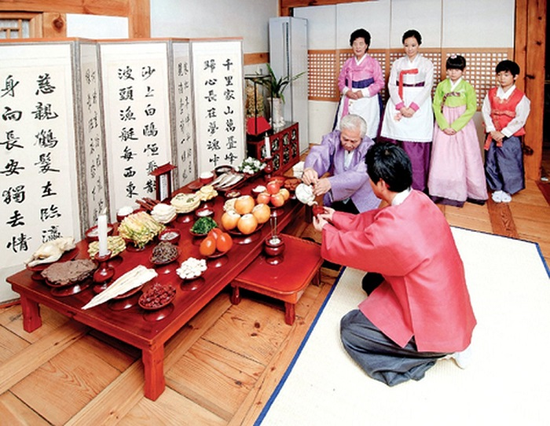
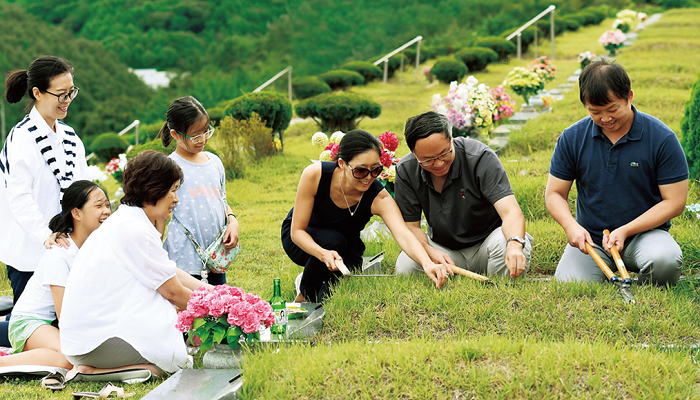
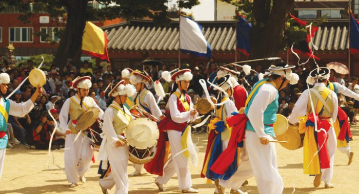

Du lịch Hàn Quốc
Welcome to Korea
Welcome to Korea

Tết Trung thu trong tiếng Hàn có tên là Chuseok. Nó có nghĩa là đêm mùa thu. Theo sử sách ghi lại, người dân Hàn Quốc đã đánh bại quân xâm lược vào mùa thu năm 822 sau Công nguyên và họ đã ăn mừng chiến thắng trong 3 ngày, 3 đêm. Tất cả mọi người cùng nhau nhảy múa, hát hò, ăn uống. Phong tục ăn mừng này được kế thừa từ thế hệ này sang thế hệ khác, sau này hình thành nên Chuseok.
Nhiều người dân Hàn Quốc lại nói rằng từ thời xa xưa, vào ngày 15 tháng 8 âm lịch hàng năm, người dân tổ chức thi dệt vải mừng mùa màng. Sau đó còn có các hoạt động vui chơi giải trí. Đây chính là nguồn gốc Tết trung thu Hàn Quốc.
Một ghi chép lịch sử khác cho biết Tết trung thu Hàn Quốc có nguồn gốc từ hoạt động cảm tạ đất trời, tổ tiên trong thời cổ đại. Ghi chép sớm nhất về phong tục này là vào năm 32 sau công nguyên, những người nông dân tổ chức hoạt động ca hát, nhảy múa, tạ ơn cha ông vì một mùa bội thu. Họ cầu mong mưa thuận, gió hòa, cuộc sống ấm no vào năm tới. Mãi đến thời Silla (57 trước công nguyên – 935 sau công nguyên), cái tên Chuseok mới ra đời. Nó bắt nguồn từ tên gọi “Tết Trung thu” của Trung Quốc. Vào thời điểm này, phong tục dân gian của lễ hội này cũng bị ảnh hưởng rất nhiều từ văn hóa Trung Quốc. Cho đến Kỷ nguyên Koryo (918-1392), Tết Trung thu ở Hàn Quốc bắt đầu trở nên phổ biến.
Mặc dù nguồn gốc chính xác chưa rõ ràng, nhưng Tết Trung thu Hàn Quốc vẫn tiếp tục duy trì. Ngày lễ này đã trở thành một sự kiện đặc biệt, đầy ý nghĩa và là nét văn hóa đặc trưng dân tộc.
Đây là phong tục quan trọng nhất trong văn hóa Hàn Quốc. Dù bận rộn thế nào đi nữa, dù cả năm bôn ba xa nhà, nhưng đến ngày này, hầu hết người dân đều trở về quê hương sum họp, đoàn viên cùng gia đình. Họ cùng nhau ăn bữa cơm, uống chén trà và chia sẻ những niềm vui, nỗi buồn trong suốt một năm. Chính vì thế, Tết Trung thu Hàn Quốc kéo dài 3 hoặc 5 ngày (nếu vào cuối tuần). Đây là một trong hai kỳ nghỉ dài nhất của đất nước.
Gần đến tết Trung thu, đông đảo người dân làm việc tại các thành phố lớn đổ về quê, tạo nên không khí nhộn nhịp, tấp nập. Vé tàu, vé xe buýt rất khó mua. Ùn tắc giao thông trên các đường cao tốc rất phổ biến. Để lái xe về nhà, họ có thể cần thời gian di chuyển gấp ba lần so với ngày thường.
Một vài ngày trước Trung thu, con cháu trong gia đình sẽ cùng nhau đi thăm viếng, quét dọn lăng mộ tổ tiên. Giống với Việt Nam, đây là một phong tục tập quán tốt đẹp. Điều đó thể hiện lòng thành kính và tưởng nhớ tới cội nguồn. Lăng mộ tổ tiên của người Hàn Quốc thường nằm trên núi. Vì vậy, việc quét dọn mộ còn được gọi là “lên núi”. “Lên núi” vào dịp Tết Trung thu là việc quan trọng nhất trong năm. Phong tục đó có ý nghĩa với mọi gia đình.
Ở một số nơi của Hàn Quốc, vào buổi sáng ngày lễ Trung thu, gia đình người em sẽ đến nhà của người anh cả để thực hiện nghi thức cúng tế. Họ đặt rượu, trái cây, bánh gạo, canh khoai sọ (Toranguk) và nhiều loại trái cây khác nhau làm vật tế trên bàn.
Vị trí các món ăn trong mâm cỗ cúng ngày Tết trung thu Hàn Quốc cũng có quy luật riêng. Cơm và súp được đặt ở phía Bắc; trái cây và rau được đặt ở phía Nam, các món thịt ở phía Tây; ở phía đông có rượu, chính giữa là bánh gạo và đồ uống như Makgeoll,… Tất cả mặc trang phục truyền thống và đứng thẳng trước ban thờ, thắp hương, vái lạy tổ tiên. Sau nghi lễ, người lớn uống rượu và các gia đình cùng nhau sum họp bên mâm cơm.
Vào Tết Trung thu ở Hàn Quốc, người dân thường mặc trang phục truyền thống Hanbok. Họ cũng tới tham quan một số địa điểm du lịch nổi tiếng như Cung điện Gyeongbokgung, Làng Dân gian, Bảo tàng Dân gian Quốc gia hoặc Làng cổ Hanok Namsan,… Các trò chơi truyền thống, hoạt động dân gian như đá cầu, đấu vật, kéo co thường được tổ chức ở những nơi này. Du lịch Hàn Quốc dịp tết Trung thu, bạn sẽ có cơ hội thưởng thức các tiết mục nghệ thuật đặc sắc từ các cô gái Hàn Quốc. Họ bộ trang phục truyền thống và nhảy múa trong khung cảnh tuyệt mĩ dưới ánh trăng.
Songpyeon là món ăn phổ biến ngàyTết Trung thu ở Hàn Quốc, khá giống với bánh trôi của Việt Nam. Đây là một loại bánh gạo truyền thống, được làm bằng bột gạo với nhiều nhân bên trong như hạt vừng, đậu đỏ, quế, hạt dẻ, mật ong… tạo nên hương vị đặc biệt. Vào ban đêm trước ngày lễ, toàn bộ thành viên trong gia đình thường tập trung lại. Họ cùng nhau nặn bánh để dâng lên cúng gia tiên vào sáng hôm sau.
Những chiếc bánh được tạo giống hình trăng khuyết, mang ý nghĩa bình an, hạnh phúc và tươi sáng. Theo quan niệm của người Hàn, “trăng khuyết rồi sẽ tròn”. Họ cũng ép bí đỏ, rau xanh, bột kiều mạch hoặc cho những thứ khác vào bột gạo để có được món Songpyeon đầy màu sắc. Sau khi nặn, bánh sẽ được đem đi hấp. Bên dưới bánh lót một lớp lá thông, tạo nên mùi thơm hấp dẫn và cảm giác lạ miệng.
Một món ăn truyền thống phổ biến khác mà mọi người ăn trong dịp Tết Trung thu Hàn Quốc chính là hangwa. Hangwa được làm bằng bột gạo, mật ong, trái cây và rễ cây. Nó có nhiều màu sắc, hình dạng khác nhau.
Để ăn mừng vào ngày Trung thu, người Hàn không thể thiếu rượu. Đó là loại rượu trắng được làm bằng gạo mới thu hoạch. Nó có tên gọi là baekju (“rượu trắng”) hoặc sindoju (“rượu gạo mới”). Đây là thứ không thể thiếu trên bàn thờ tổ tiên. Sau khi cúng lễ xong, người Hàn Quốc ngồi quây quần bên mâm cơm, cùng nhau nhâm nhi ly rượu và thưởng thức các món ăn truyền thống.
Ngày Tết trung thu ở Hàn quốc là dịp mà mọi người tặng quà và dành mọi lời chúc tốt đẹp cho những người thân yêu. Điều này thể hiện lòng trân trọng và cảm ơn. Trước kia, quà tặng chủ yếu là những nhu yếu phẩm hàng ngày. Đó là dầu ăn, thịt bò, hoa quả, cà phê, dụng cụ nấu ăn, v.v.. Trong những năm gần đây, cuộc sống trở lên hiện đại, họ thường biếu nhau những món quà như nhân sâm Hàn Quốc và các sản phẩm dinh dưỡng khác hay các đồ gia dụng nhỏ.
GỢI Ý TOUR DU LỊCH HÀN QUỐC |
|---|
>> Hà Nội – Hàn Quốc: Seoul – Nami – Everland 5N Bay T’way Air
|
Top 20 điểm tham quan nhất định phải ghé thăm trong hành trình chinh phục Seoul

Điện thoại: 0903357616
Email: thaontps24690@fpt.edu.vn